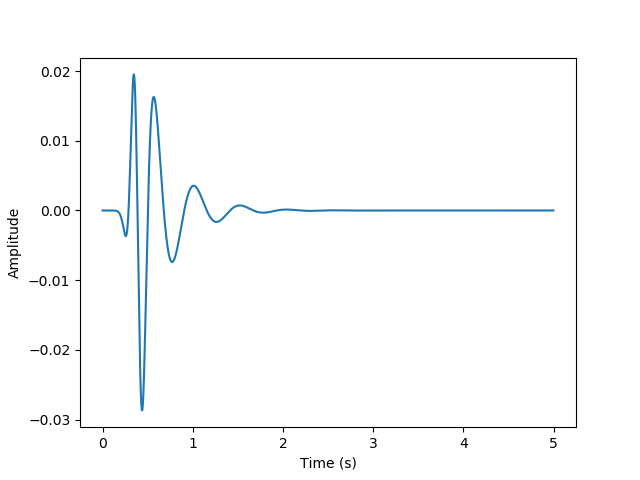
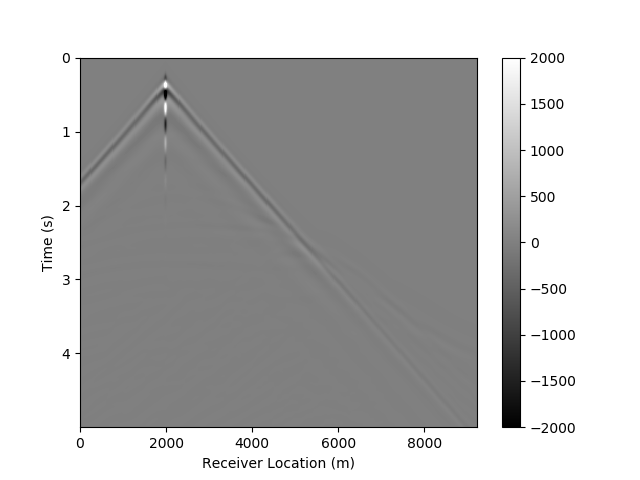

FWI
In this example, we perform full-waveform inversion (FWI) with FwiFlow. For explanation of FWI, see the documentation here.
First we load all necessary packages
using FwiFlow
using PyCall
using LinearAlgebra
using DelimitedFiles
np = pyimport("numpy")
sio = pyimport("scipy.io")We specify the parameters for the computational domain and numerical methods. The computational domain is shown below

oz = 0.0
ox = 0.0
dz_orig = 24.0
dx_orig = 24.0
nz_orig = 134
nx_orig = 384
dz = dz_orig/1.0
dx = dx_orig/1.0
nz = Int64(round((dz_orig * nz_orig) / dz));
nx = Int64(round((dx_orig * nx_orig) / dx))
dt = 0.0025
nSteps = 2000
para_fname = "para_file.json"
survey_fname = "survey_file.json"
data_dir_name = "Data"We set the PML width, padding width (optional; the padding is for performance, see padding) and the mask, which removes the effect of sources and makes inversion more stable.
nPml = 32
nPad = 32 - mod((nz+2*nPml), 32)
nz_pad = nz + 2*nPml + nPad
nx_pad = nx + 2*nPml
Mask = zeros(nz_pad, nx_pad)
Mask[nPml+1:nPml+nz, nPml+1:nPml+nx] .= 1.0
Mask[nPml+1:nPml+10,:] .= 0.0
tf_mask = constant(Mask)
tf_mask_neg = constant(1.0 .- Mask)The source and receiver indices are given by
ind_src_x = collect(4:8:384)
ind_src_z = 2ones(Int64, size(ind_src_x))
ind_rec_x = collect(3:381)
ind_rec_z = 2ones(Int64, size(ind_rec_x))Next, we load source time functions (stf_load) from the file.
stf_load = Matrix{Float64}(undef, 1, nSteps)
stf_load[1,:] = sio.loadmat("$(DATADIR)/sourceF_4p5_2_high.mat", squeeze_me=true, struct_as_record=false)["sourceF"]
tf_stf_array = tf.broadcast_to(constant(stf_load), [length(ind_src_z), nSteps])Each source time function has the following profile

We load the true P-wave, S-wave and densities to generate synthetic observation data
cp_true_pad = reshape(reinterpret(Float32,read("$DATADIR/Model_Cp_true.bin")) , (nz_pad, nx_pad))
cs_true_pad = zeros(nz_pad, nx_pad)
den_true_pad = 2500.0 .* ones(nz_pad, nx_pad)
tf_cp_pad = Variable(cp_true_pad, dtype=Float64) # original scale as
tf_cs_pad = constant(cs_true_pad, dtype=Float64)
tf_den_pad = constant(den_true_pad, dtype=Float64)
function vel2moduli(cp,cs,den)
lambda = (cp^2 - 2.0 * cs^2) .* den / 1e6
mu = cs^2 .* den / 1e6
return lambda, mu
end
tf_lambda_inv_pad, tf_mu_inv_pad = vel2moduli(tf_cp_pad, tf_cs_pad, tf_den_pad)We use paraGen and surveyGen to generate parameter files
f0 = 4.5
paraGen(nz_pad, nx_pad, dz, dx, nSteps, dt, f0, nPml, nPad, para_fname, survey_fname, data_dir_name)
surveyGen(ind_src_z, ind_src_x, ind_rec_z, ind_rec_x, survey_fname)At this point, we should be able to see two files in the current directory
para_file.json
{"nz":224,"nx":448,"dz":24.0,"dx":24.0,"nSteps":2000,"dt":0.0025,"f0":4.5,"nPoints_pml":32,"nPad":26,"survey_fname":"survey_file.json","data_dir_name":"Data"}survey_file.json
{"nShots":48,"shot0":{"z_src":2,"x_src":4,"nrec":379,"z_rec":[2,2,2,2,2,...Finally we execute the forward wave equation and save the observation data to files. In the following script, we explicitly specify the ID of GPU where the operator is executed.
tf_shot_ids = collect(0:length(ind_src_z)-1)
dummy = fwi_obs_op(tf_lambda_inv_pad, tf_mu_inv_pad, tf_den_pad, tf_stf_array, 0, tf_shot_ids, para_fname) # use GPU:0
sess = Session(); init(sess);
run(sess, dummy)In the Data folder, there will be 47 Shot*.bin files. We can visualize the result with the following script
A=read("Data/Shot10.bin");imshow(reshape(reinterpret(Float32,A),(nSteps ,length(ind_rec_z))), aspect="auto", vmax=2000, vmin=-2000, extent=[0, nx*dx, dt*(nSteps-1), 0])
xlabel("Receiver Location (m)")
ylabel("Time (s)")
colorbar()
set_cmap("gray")
We now consider the inversion problem: assume that we do not known the P-wave velocity. We mark it as independent variable to be update using Variable. Additionally, for better coalesced memory access on GPU, we pad the variables to multiples of 32 in the $z$ direction.
cs_init_pad = zeros(nz_pad, nx_pad)
den_init_pad = 2500.0 .* ones(nz_pad, nx_pad)
cp_init_pad = reshape(reinterpret(Float32,read("$DATADIR/Model_Cp_init_1D.bin")), (nz_pad, nx_pad))
tf_cp_inv = Variable(cp_init_pad[nPml+1:nPml+nz, nPml+1:nPml+nx], dtype=Float64) # original scale as
tf_cs_inv = constant(cs_init_pad[nPml+1:nPml+nz, nPml+1:nPml+nx], dtype=Float64)
tf_den_inv = constant(den_init_pad[nPml+1:nPml+nz, nPml+1:nPml+nx], dtype=Float64)
tf_cp_ref_pad = constant(cp_init_pad, dtype=Float64) # original scale as
tf_cs_ref_pad = constant(cs_init_pad, dtype=Float64)
tf_den_ref_pad = constant(den_init_pad, dtype=Float64)
tf_cp_inv_pad, tf_cs_inv_pad, tf_den_inv_pad = padding(tf_cp_inv, tf_cs_inv,
tf_den_inv, nz_orig, nx_orig, nz, nx, nPml, nPad)Likewise, to remove the effect of extreme values close to the sources, we use masks
tf_cp_msk_pad = tf_cp_inv_pad .* tf_mask + tf_cp_ref_pad .* tf_mask_neg
tf_cs_msk_pad = tf_cs_inv_pad .* tf_mask + tf_cs_ref_pad .* tf_mask_neg
tf_den_msk_pad = tf_den_inv_pad .* tf_mask + tf_den_ref_pad .* tf_mask_neg
tf_lambda_inv_pad, tf_mu_inv_pad = vel2moduli(tf_cp_msk_pad, tf_cs_msk_pad,tf_den_msk_pad)The inversion can be done in parallel in multi-GPU machines. This is done by specifying the GPU IDs for different fwi_op.
loss = constant(0.0)
nGpus = length(use_gpu())
shot_id_points = Int32.(trunc.(collect(LinRange(0, length(ind_src_z)-1, nGpus+1))))
loss = constant(0.0)
for i = 1:nGpus
global loss
tf_shot_ids = collect(shot_id_points[i]:shot_id_points[i+1])
loss += fwi_op(tf_lambda_inv_pad, tf_mu_inv_pad, tf_den_inv_pad,
tf_stf_array, i-1, tf_shot_ids, para_fname)
endFinally, we trigger BFGS optimizer with two lines of codes.
sess = Session(); init(sess)
BFGS!(sess, loss)Here is a snapshot of multi-GPU execution. Note we have only used approximately 2% of total memory, which means we can actually places about 50 times the current number of sources on each GPU!